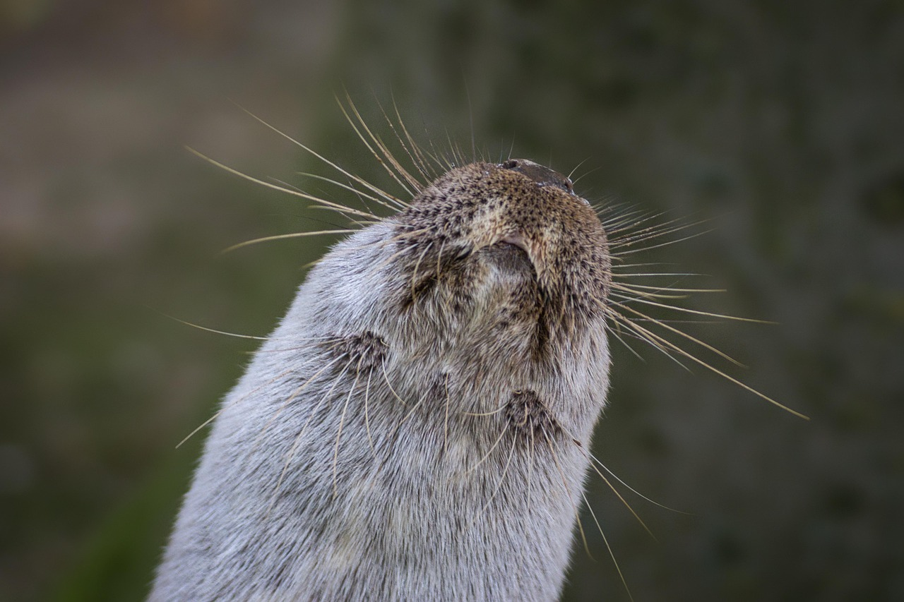

Hi, I'm Nuceleus! 
Hello, I'm Nuceleus, a very curious otter and, above all, a programming enthusiast. I love diving into code as much as I love diving into water, and I've explored languages like HTML to structure my thoughts, CSS to give them an impeccable style, Python to automate my daily tasks, and JavaScript to make everything interactive and dynamic. I enjoy working in a team and have participated in several group projects, collaborating and sharing my code through GitHub.